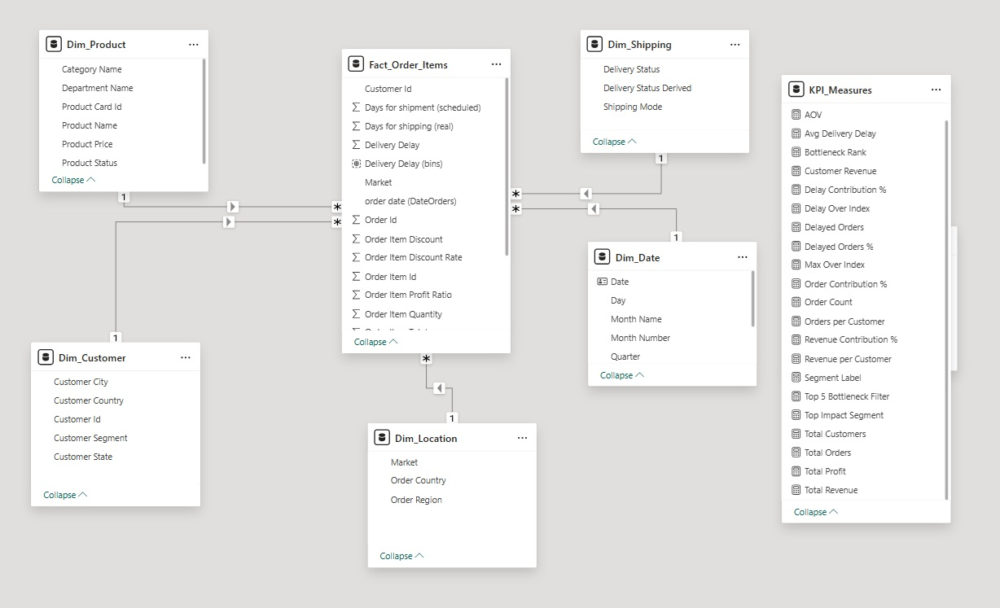
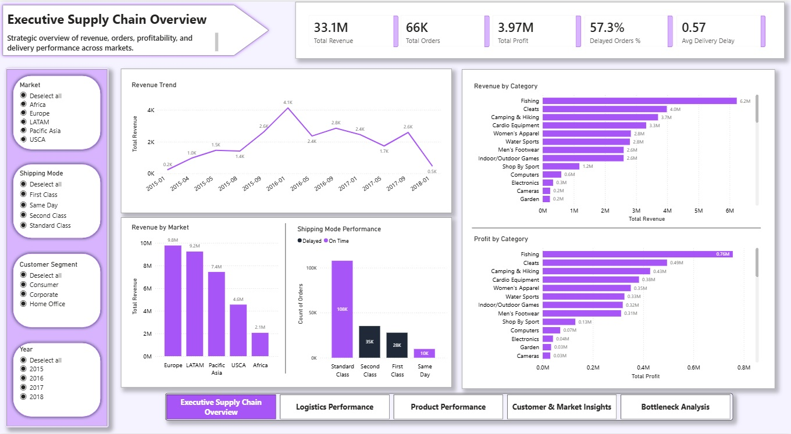
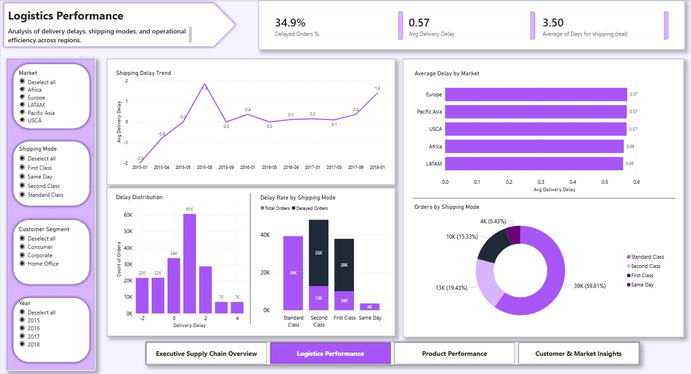
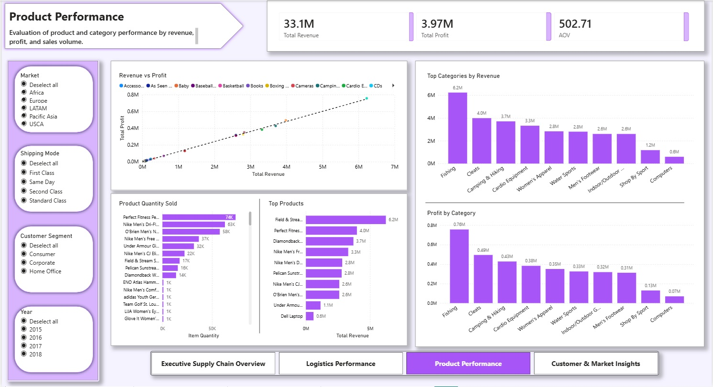
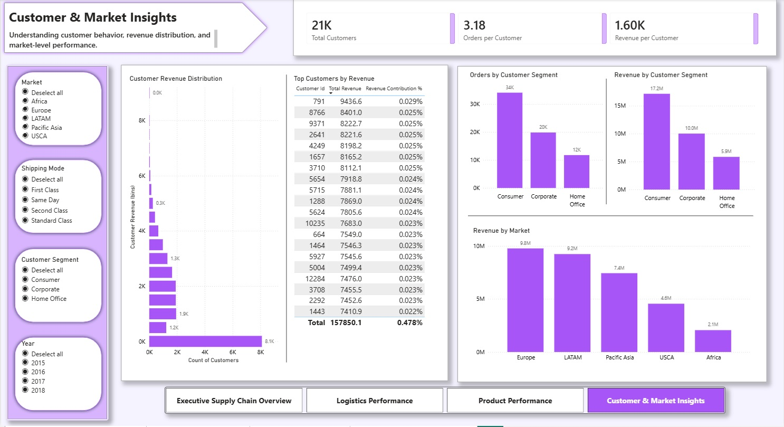

Supply Chain Analytics Dashboard
Exploring global supply chain performance across revenue, logistics, and customer behavior using Power BI.

The Problem
While analyzing a global supply chain dataset with over 180,000 order records, one issue stood out.
Nearly 35% of all orders were delivered later than scheduled.
This raises important questions around logistics efficiency, operational planning, and delivery performance.
Approach
- Data cleaning and preprocessing using Python (Pandas)
- Star schema data modeling
- KPI creation using DAX
- Interactive dashboard development in Power BI
Data Model
The dataset was structured using a star schema to enable efficient and scalable analysis across multiple dimensions.

Executive Overview
A high-level summary of revenue, orders, profit, and delivery performance across global markets.

Logistics Performance
Analysis of delivery delays, shipping modes, and operational efficiency across regions.

Product Performance
Evaluation of product categories and top-performing products by revenue and profitability.

Customer & Market Insights
Insights into customer behavior, revenue distribution, and market-level performance.

Key Insights
- ~35% of orders are delayed, indicating operational inefficiencies
- Revenue is concentrated in a few product categories
- Standard shipping mode dominates order volume
- Customer revenue follows a long-tail distribution
Tools & Technologies
- Python (Pandas)
- Power BI
- DAX
- Dimensional Data Modeling
Explore More
Want to dive deeper into the analysis or explore the implementation?